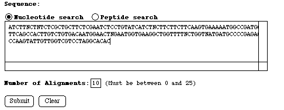

If the search was a nucleotide search as in this example, two groups of results are returned. The first group is the results of the nucleotide query searched at the nucleotide level of the database. The second group is the results of the query sequence translated in six frames and then searched against the database also translated in six frames. The statistical significance of the hits are shown and are more important to consider than the %Id column as this does not take into account the length of the match. Below the summaries are alignments of the most significant matches. The number of alignments shown can be adjusted in the form. Again, for the purpose of this tutorial only sleected links are available. From this page you can link to the report of the assembly, single EST or ET sequence for which a match was found.
Your nucleotide query has 6 significant matches
searching at the nucleotide level against
the "NHCD AT" EST database (sorted by statistical significance).
An additional 2 marginally significant matches are also shown.
HCD Number Putative Identification %Id Prob.
--------------------------------------------------------------------------------
TC8203 actin7 (ACT7) 95.8 1.7e-65
TC9531 actin 1 isolog 80.8 3.8e-36
TC8306 actin-1, AAc1 78.0 2.0e-25
TC8797 actin 1 isolog 74.4 2.5e-22
P_10815 T76037 actin [Pisum sativum] [dbEST] 74.9 8.9e-20
TC8901 actin 1 isolog 74.9 9.8e-20
TC8537 CONSTANS protein isolog 59.8 3.4e-02
TC9263 thiol protease, rd21A isolog 86.7 1.2e-01
Your nucleotide query has 6 significant matches
searching at the peptide level against
the "NHCD AT" EST database (sorted by statistical significance).
An additional 2 marginally significant matches are also shown.
HCD Number Putative Identification %Sim %Id Prob.
--------------------------------------------------------------------------------
TC8203 actin7 (ACT7) 88.7 88.7 3.6e-36
TC9531 actin 1 isolog 90.7 90.7 4.0e-25
TC8306 actin-1, AAc1 90.7 90.7 4.3e-21
P_10815 T76037 actin [Pisum sativum] [dbEST] 88.4 79.1 7.3e-21
TC8901 actin 1 isolog 88.4 79.1 4.7e-20
TC8797 actin 1 isolog 85.7 76.2 1.1e-17
TC11144 63.6 42.4 5.2e-04
Q_ATTS3083 Z34035 actin related protein [Drosophila mel 58.3 50.0 8.1e-02
anogaster] [dbEST]
Alignment 1:
TC8203(40 - 228 of 1502) actin7 (ACT7)
Your_Query(1 - 188 of 188)
%Match = 97.5
%Identity = 95.8 %Similarity = 99.5
Matches = 181 Mismatches = 0 Conservative Sub.s = 7
Gaps = 1 InDels = 1
40 50 60 70 80 90
40 ATCTTTCTCTCTCGCTGCTTCTCGAATCTYCTGTATCATCTTCTTCTTCTTCAAGTGAAA 99
S F S L A A S R I X C I I F F F F K * K
| | | | | | | | | | | | | | | |
S X X L A A S R I S C I I X F F F K * K
1 ATCTTNCTNTCTCGCTGCTTCTCGAATCTCCTGTATCATCTNCTTCTTCTTCAAGTGAAA 60
10 20 30 40 50 60
100 110 120 130 140 150
100 AATGGCCGATGGTGAGGATATTCAGCCACTTGTCTGTGACAATGGAACTGGAATGGTGAA 159
M A D G E D I Q P L V C D N G T G M V K
| | | | | | | | | | | | | | | | | | |
M A D G E D I Q P L V C D N G T X M V K
61 AATGGCCGATGGTGAGGATATTCAGCCACTTGTCTGTGACAATGGAACTNGAATGGTGAA 120
70 80 90 100 110 120
160 170 180 190 200 210
160 GGCTGGTTTTSCTGGTGATGATGCCCCGAGAGCAGTGTTCCCAAGTATTGTTGGTCGTCC 219
A G F X G D D A P R A V F P S I V G R P
| | | | | | | | | | | | | | | | |
A G F X G X D A P R A V F X S I V G R P
121 GGCTGGTTTTNCTGGTNATGATGCCCCGAGAGCAGTGTT-CCAAGTATTGTTGGTCGTCC 179
130 140 150 160 170
220
220 TAGGCACAC 228
R H
| |
R H
180 TAGGCACAC 188
180
Alignment 2:
TC8306(93 - 221 of 1228) actin-1, AAc1
Your_Query(59 - 186 of 188)
%Match = 63.4
%Identity = 90.7 %Similarity = 90.7
Matches = 39 Mismatches = 3 Conservative Sub.s = 0
Gaps = 1 InDels = 5
Dbase: Frame Shifts = 0 Primary Frame = 3 [0, 0, 42]
Query: Frame Shifts = 1 Primary Frame = 2 [8, 34, 0]
100 110 120 130 140 150
93 AAAATGGCTGATGGTGAAGACATTCAACCTCTTGTTTGCGACAATGGAACTGGAATGGTT 152
K M A D G E D I Q P L V C D N G T G M V
| | | | | | | | | | | | | | | | | | |
K M A D G E D I Q P L V C D N G T X M V
59 AAAATGGCCGATGGTGAGGATATTCAGCCACTTGTCTGTGACAATGGAACTNGAATGGTG 118
60 70 80 90 100 110
160 170 180 190 200 210
153 AAGGCTGGTTTTGCTGGGGATGATGCACCTAGAGCTGTGTTT--CCTAGTATTGTGGGTC 210
K A G F A G D D A P R A V F2 S I V G R
| | | | | | | | | | | |v | | | | |
K A G F X G X D A P R A V F1 S I V G R
119 AAGGCTGGTTTTNCTGGTNATGATGCCCCGAGAGCAGTGTTCCA---AGTATTGTTGGTC 175
120 130 140 150 160 170
220
211 GTCCTCGTCAC 221
P R H
| | |
P R H
176 GTCCTAGGCAC 186
180
Alignment 3:
TC9531(150 - 278 of 477) actin 1 isolog
Your_Query(59 - 186 of 188)
%Match = 63.4
%Identity = 90.7 %Similarity = 90.7
Matches = 39 Mismatches = 3 Conservative Sub.s = 0
Gaps = 1 InDels = 5
Dbase: Frame Shifts = 0 Primary Frame = 3 [0, 0, 42]
Query: Frame Shifts = 1 Primary Frame = 2 [8, 34, 0]
150 160 170 180 190 200
150 AAAATGGCTGATGGTGAAGATATTCAACCCCTTGTCTGTGACAATGGAACTGGAATGGTT 209
K M A D G E D I Q P L V C D N G T G M V
| | | | | | | | | | | | | | | | | | |
K M A D G E D I Q P L V C D N G T X M V
59 AAAATGGCCGATGGTGAGGATATTCAGCCACTTGTCTGTGACAATGGAACTNGAATGGTG 118
60 70 80 90 100 110
210 220 230 240 250 260
210 AAGGCTGGTTTTGCTGGGGATGATGCACCGAGGGCTGTGTTT--CCAAGTATTGTTGGCC 267
K A G F A G D D A P R A V F2 S I V G R
| | | | | | | | | | | |v | | | | |
K A G F X G X D A P R A V F1 S I V G R
119 AAGGCTGGTTTTNCTGGTNATGATGCCCCGAGAGCAGTGTTCCA---AGTATTGTTGGTC 175
120 130 140 150 160 170
270
268 GTCCTCGCCAC 278
P R H
| | |
P R H
176 GTCCTAGGCAC 186
180
Alignment 4:
TC8901(161 - 289 of 595) actin 1 isolog
Your_Query(59 - 186 of 188)
%Match = 57.4
%Identity = 79.1 %Similarity = 88.4
Matches = 34 Mismatches = 4 Conservative Sub.s = 4
Gaps = 1 InDels = 5
Dbase: Frame Shifts = 0 Primary Frame = 2 [0, 42, 0]
Query: Frame Shifts = 1 Primary Frame = 2 [8, 34, 0]
170 180 190 200 210 220
161 AAAATGGCTGAGGCTGATGATATTCAACCAATCGTGTGTGACAATGGTACCGGTATGGTG 220
K M A E A D D I Q P I V C D N G T G M V
| | | : : | | | | : | | | | | | | |
K M A D G E D I Q P L V C D N G T X M V
59 AAAATGGCCGATGGTGAGGATATTCAGCCACTTGTCTGTGACAATGGAACTNGAATGGTG 118
60 70 80 90 100 110
230 240 250 260 270
221 AAGGCTGGATTTGCAGGAGATGATGCTCCCAGGGCTGTTTTT--CCCAGTGTTGTTGGTA 278
K A G F A G D D A P R A V F2 S V V G R
| | | | | | | | | | | |v | : | | |
K A G F X G X D A P R A V F1 S I V G R
119 AAGGCTGGTTTTNCTGGTNATGATGCCCCGAGAGCAGTGTTCCA---AGTATTGTTGGTC 175
120 130 140 150 160 170
280
279 GGCCAAGACAT 289
P R H
| | |
P R H
176 GTCCTAGGCAC 186
180
Alignment 5:
P_10815(134 - 262 of 491) T76037 actin [Pisum sativum] [dbEST]
Your_Query(59 - 186 of 188)
%Match = 57.4
%Identity = 79.1 %Similarity = 88.4
Matches = 34 Mismatches = 4 Conservative Sub.s = 4
Gaps = 1 InDels = 5
Dbase: Frame Shifts = 0 Primary Frame = 2 [0, 42, 0]
Query: Frame Shifts = 1 Primary Frame = 2 [8, 34, 0]
140 150 160 170 180 190
134 AAAATGGCTGAGGCTGATGATATTCAACCAATCGTGTGTGACAATGGTACCGGTATGGTG 193
K M A E A D D I Q P I V C D N G T G M V
| | | : : | | | | : | | | | | | | |
K M A D G E D I Q P L V C D N G T X M V
59 AAAATGGCCGATGGTGAGGATATTCAGCCACTTGTCTGTGACAATGGAACTNGAATGGTG 118
60 70 80 90 100 110
200 210 220 230 240 250
194 AAGGCTGGATTTGCAGGAGATGATGCTCCCAGGGCTGTTTTT--CCCAGTGTTGTTGGTA 251
K A G F A G D D A P R A V F2 S V V G R
| | | | | | | | | | | |v | : | | |
K A G F X G X D A P R A V F1 S I V G R
119 AAGGCTGGTTTTNCTGGTNATGATGCCCCGAGAGCAGTGTTCCA---AGTATTGTTGGTC 175
120 130 140 150 160 170
260
252 GGCCAAGACAT 262
P R H
| | |
P R H
176 GTCCTAGGCAC 186
180
Alignment 6:
TC8797(160 - 285 of 1355) actin 1 isolog
Your_Query(62 - 186 of 188)
%Match = 55.6
%Identity = 76.2 %Similarity = 85.7
Matches = 32 Mismatches = 5 Conservative Sub.s = 4
Gaps = 1 InDels = 5
Dbase: Frame Shifts = 0 Primary Frame = 1 [41, 0, 0]
Query: Frame Shifts = 1 Primary Frame = 2 [10, 31, 0]
160 170 180 190 200 210
160 ATGGCCGATGCTGATGACATTCAACCTATTGTCTGTRACAATGGTACTGGAATGGTTAAG 219
M A D A D D I Q P I V C B N G T G M V K
| | | : | | | | : | | : | | | | | |
M A D G E D I Q P L V C D N G T X M V K
62 ATGGCCGATGGTGAGGATATTCAGCCACTTGTCTGTGACAATGGAACTNGAATGGTGAAG 121
70 80 90 100 110 120
220 230 240 250 260 270
220 GCTGGATTCGCTGGAGATGATGCTCCCAGAGCG--GTTTTCCCCAGTGTTGTTGGTCGAC 277
A G F A G D D A P R A2 F P S V V G R P
| | | | | | | | |v | | : | | | |
A G F X G X D A P R A1 V P S I V G R P
122 GCTGGTTTTNCTGGTNATGATGCCCCGAGAGCAGT---GTTCCAAGTATTGTTGGTCGTC 178
130 140 150 160 170
280
278 CTAGACAT 285
R H
| |
R H
179 CTAGGCAC 186
180
Alignment 7:
TC11144(83 - 181 of 505)
Your_Query(62 - 160 of 188)
%Match = 25.4
%Identity = 42.4 %Similarity = 63.6
Matches = 14 Mismatches = 12 Conservative Sub.s = 7
Gaps = 0 InDels = 0
Dbase: Frame Shifts = 0 Primary Frame = 2 [0, 33, 0]
Query: Frame Shifts = 0 Primary Frame = 2 [0, 33, 0]
90 100 110 120 130 140
83 ATGTACGGCGGAGATGAAGTGTCAGCTATTGTGGTTGANTTGGGTTCGCACACTTGCAAG 142
M Y G G D E V S A I V V X L G S H T C K
| | : : : : | | : |
M A D G E D I Q P L V C D N G T X M V K
62 ATGGCCGATGGTGAGGATATTCAGCCACTTGTCTGTGACAATGGAACTNGAATGGTGAAG 121
70 80 90 100 110 120
150 160 170 180
143 GCTGGTTACGCCGGTNAAGATGCTCCCAAGGCCGTTTTC 181
A G Y A G X D A P K A V F
| | : | | | | : | | |
A G F X G X D A P R A V F
122 GCTGGTTTTNCTGGTNATGATGCCCCGAGAGCAGTGTTC 160
130 140 150 160
Alignment 8:
Q_ATTS3083(116 - 187 of 272) Z34035 actin related protein [Drosophila melanogaster] [dbEST]
Your_Query(89 - 160 of 188)
%Match = 21.3
%Identity = 50.0 %Similarity = 58.3
Matches = 12 Mismatches = 10 Conservative Sub.s = 2
Gaps = 0 InDels = 0
Dbase: Frame Shifts = 0 Primary Frame = 2 [0, 24, 0]
Query: Frame Shifts = 0 Primary Frame = 2 [0, 24, 0]
120 130 140 150 160 170
116 GTCGTTTGCGACAACGGCACCGGTTATGTAAAATGTGGATTTTGCTGGAGAGAATTTCCC 175
V V C D N G T G Y V K C G F C W R E F P
: | | | | | | | | | | : |
L V C D N G T X M V K A G F X G X D A P
89 CTTGTCTGTGACAATGGAACTNGAATGGTGAAGGCTGGTTTTNCTGGTNATGATGCCCCG 148
90 100 110 120 130 140
180
176 AACGTCTGTTTT 187
N V C F
|
R A V F
149 AGAGCAGTGTTC 160
150 160